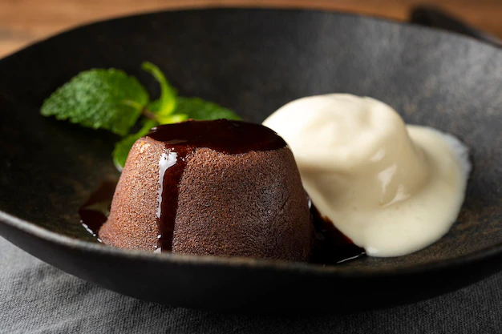

Petit Gateau

Petit Gateau é um nome francês que significa pequeno bolo, mas não foi desse país que veio essa delícia.
Há
quem diga que foi criado na Itália e outros que dizem que ele apareceu nos Estados Unidos, mas o que importa
é que o doce se popularizou pelo mundo todo e existe em várias versões: tem Petit Gateau de cenoura, Petit
Gateau de doce de leite e até Petit Gateau de caneca.
INGREDIENTES:
- 200 g de chocolate meio amargo
- 2 colheres de manteiga sem sa
- 1/4 xícara (chá) de açúcar
- 2 colheres (sopa) rasas de farinha de trigo
- 2 ovos inteiros (tire a pele da gema2 gemas
MODO DE PREPARO:
- Derreta a manteiga e o chocolate em banho-maria.
- Bata os ovos e as gemas com açúcar na batedeira, até ficar bem claro.
- Junte o chocolate derretido e a farinha de trigo, misturando com uma espátula.
- Depois, unte as forminhas de empadinha, passe farinha de trigo e coloque a massa.
- Preaqueça o forno e leve para assar de 6 a 10 minutos (em fogo alto) até os bolinhos crescerem, mas o
meio deve ficar molinho.
- Deve-se desenformar ainda quente.
- Sirva diretamente no prato, acompanhado com sorvete de creme.